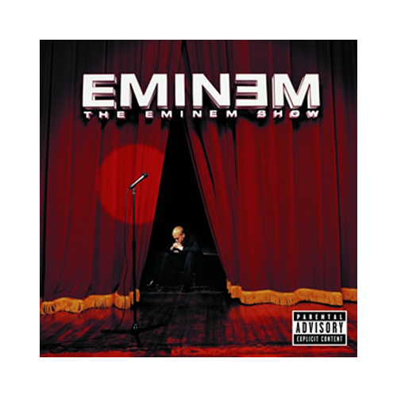
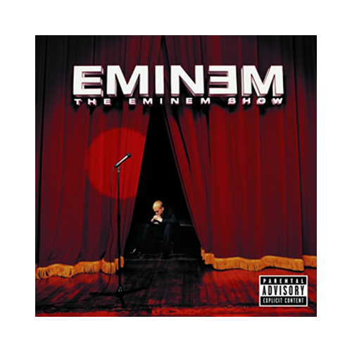

This album is really just Eminem stepping back to look at what the wild success of his first two albums created. But don’t confuse stepping back
with holding back, as his rhymes on this album are as potent as ever. For the first time the public was made aware that Eminem realized the effect
his music had on everyone, which he goes in to greater detail on in White America, Without Me, and Sing for the Moment. This certainly displayed his
growth into a more mature artist, as he even included a love song to his daughter on it. But don’t get it twisted, there is still plenty anger and
lyrical wit leftover from his first two albums, best exemplified on Soldier, ‘Till I Collapse, and Superman.
 
